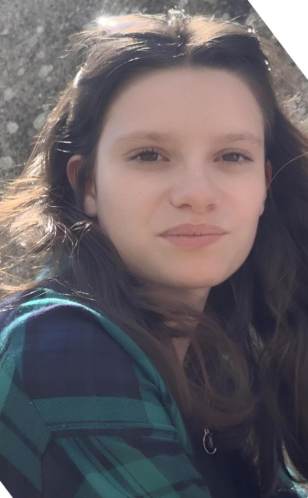

Formation
Bachelor Universitaire de Technologie en Science des Données — parcours Visualisation et Conception d'Outils Décisionnels (VCOD) en alternance.
Je suis étudiante en troisième année d'un Bachelor Universitaire de Techologie en Science des données et sur ma deuxième année d'alternance au sein du groupe Covéa.

Je me considère comme une fille simple, qui aime les choses simples.
J'aime donner le meilleur de moi-même dans tout ce que j'entreprends pour rendre fier mes proches. C'est cette envie de progresser qui me rend perfectionniste, tant dans mes études que sur un terrain de sport.
J'apprécie me ressourcer en pleine nature et notemment en montagne afin de déconnecter des écrans très présent dans la vie quotidienne.
J'aime également profiter de ma famille et de mes amis en faisant des choses très simple comme des jeux de société ou une bonne pétanque.
Bachelor Universitaire de Technologie en Science des Données — parcours Visualisation et Conception d'Outils Décisionnels (VCOD) en alternance.
Alternance chez Covéa depuis 2024, Technicienne en études et reporting au sein de l'équipe Pilotage de la Direction Santé Prévoyance.
Mission :
• Réalisation d'études statisitques
• Création de tableaux de bord
• Construction d'outil d'aide à la décision
• Maintenance des programmes et des rapports
Techniques : SQL · VBA · Excel · SAS · SAS VA · Python
Qualités : Rigueur · Autonomie · Communication · Esprit d'équipe · Organisation · Analyse · Adaptabilité